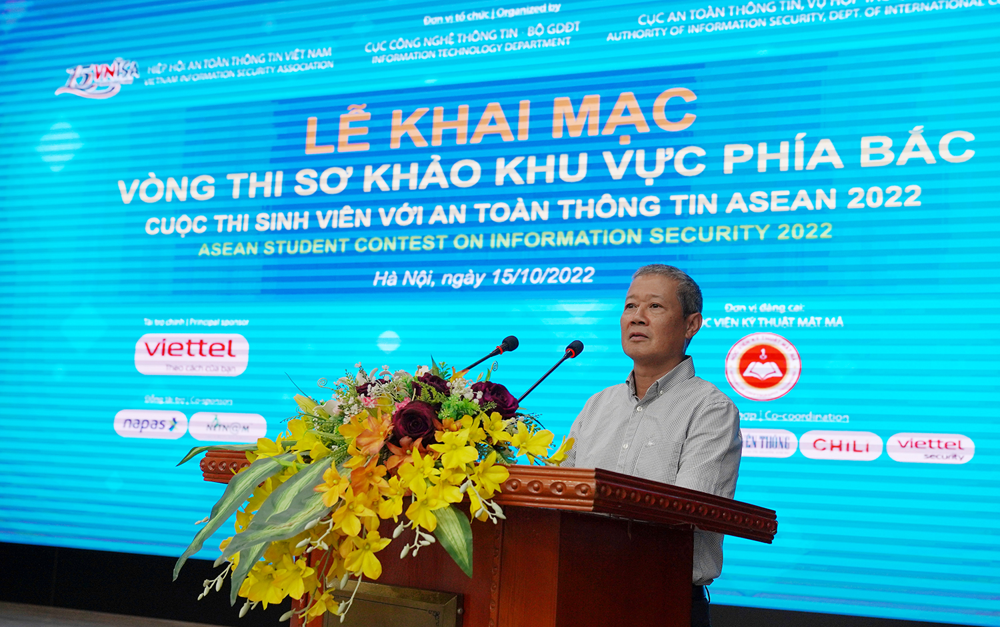
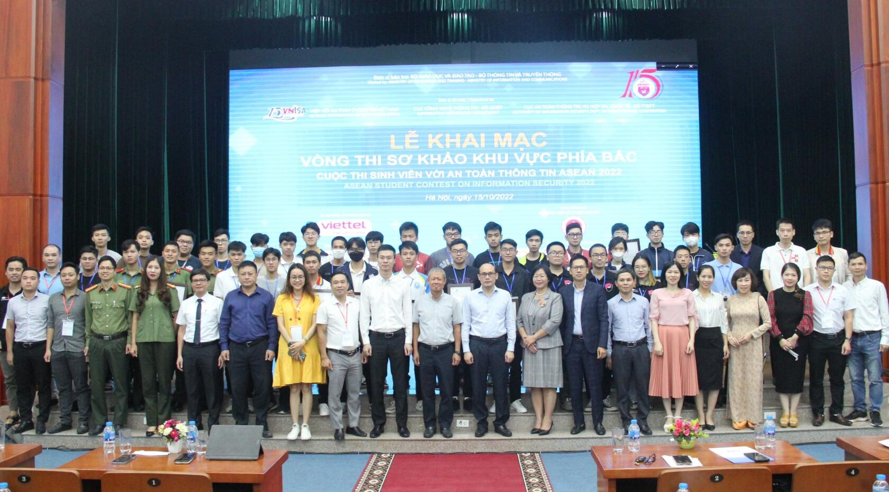
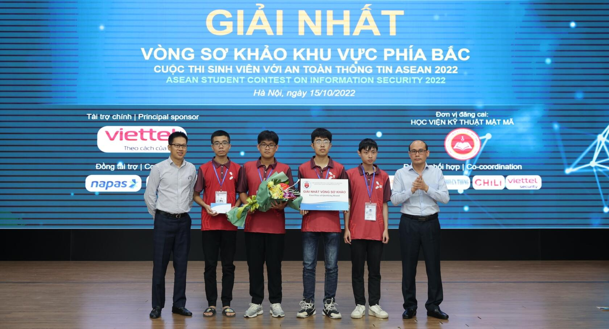
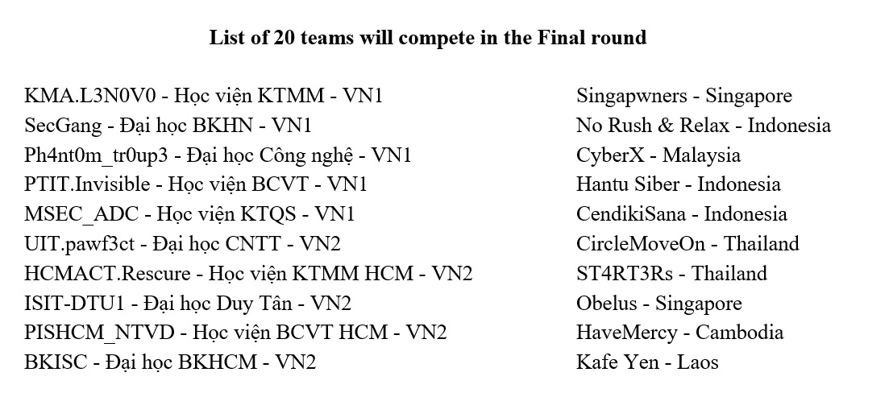

The Qualifying Round of the ASEAN Student Contest on Information Security 2022 took place on November 15th, 2022 with the participation of 112 teams. At the end of the round, the team sent to attend Cyber SEA GAME 2022 in Thailand was determined.
In this round teams were divided into 3 groups:

Mr Nguyen Thanh Hung – VNISA’s chairman speaking at the Opening Ceremoney (Hanoi)
Attending the opening ceremony at the northern site were Mr. Nguyen Thanh Hung, Chairman of Vietnam Information Security Association (VNISA), former Deputy Minister of Information and Communications; Mr. Tran Dang Khoa, Deputy Director General of Department of Information and Communications, Ministry of Information and Communications; Mr. To Hong Nam, Deputy Director General of Information Technology Department, Ministry of Education and Training; Mr. Khong Huy Hung, Vice Chairman of VNISA, Head of the Contest Organizing Committee; members of the Organizing Committee; and representatives of A05, 86th Command and a number of agencies and organizations operating in the field of information security.

The delegates took photos with the organizers and representatives of the northern teams
Speaking at the opening, Mr. Nguyen Thanh Hung said that this year’s contest was held in the context that the Government is promoting the digital transformation strategy, moving towards building a digital Government, digital economy and digital society. To successfully implement this strategy, it is very important to ensure information security.In particular, security personnel have a decisive role. The participants in today’s contest are one of the decisive factors in the successful implementation of the National Digital Transformation Strategy. This is not only a useful playground for them but also a condition for them to supplement their practical knowledge.

Mr Khong Huy Hung – Head of Organizing Committee and Mr Luong The Dung Deputy Director of Academy of Cryptography Techniques presented the First Prize of the Northern Qualifying Round to team KMA.L3N0V0
In group VN1, the First prize was awarded to team KMA.L3N0V0 (Academy of Cryptography Techniques). The Second prize went to 2 teams Ph4nt0m_tr0up3 (National University of Engineering Technology) and SecGang (Hanoi University of Science and Technology)
In group VN2, the First prize was awarded to team UIT.pawf3ct (University of Information Technology, Vietnam National University HCMC). The Second prize went to 2 teams HCMACT.Rescure (Academy of Cryptography Techniques in the south) and ISIT-DTU1 (Duy Tan University).
In group ASEAN, the First prize was awarded to team Singapwners (National University of Singapore). The Second prize went to 2 teams No Rush & Relax (Indonesia) và CyberX (Malaysia).

Also at the Closing Ceremony of the Qualifying Round, representatives of the Organizing Committee announced 20 teams will compete in the Final Round on November 15th, 2022 including 10 teams from Vietnam and 10 teams from other ASEAN country. Vietnamese teams will compete in Hanoi while ASEAN teams will compete online.
With the highest total score in the Qualifying Round, in addition to qualifying for the Final Round, team KMA.L3N0V0 from Academy of Cryptography Techniques was also selected to represent Vietnam in the Cyber SEA GAME 2022 contest held in Thailand on Novemeber 10th, 2022.